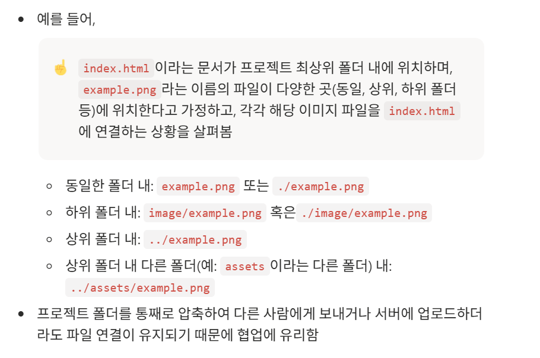
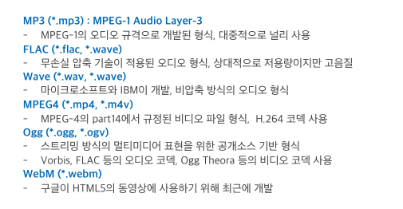

move to Youtube in this tab:self
move to Youtube in another tab:blank
- 상대 경로는 현재 내가 작업하는 파일의 위치를 기준으로 경로를 설정하는 방식으로, 프로젝트의 전체 폴더를 옮겨도 경로가 그대로 유지되므로, 가장 널리 사용되는 방식임
- 연결하고자 하는 파일이, 현재 작업 중인 파일(html, js 등) 과
- 동일한 폴더 내: ./를 사용하거나 생략
- 하위 폴더 내: 현재 폴더 아래에 있는 폴더의 이름을 적고 /로 구분
- 상위 폴더 내: ../를 사용하여 현재 폴더의 한 단계 상위 폴더로 이동
- 상위 폴더 내 다른 폴더: ../로 상위 폴더로 이동한 후, 다른 폴더의 이름으로 진입합니다.


- src
- alt
- width, height
- figure는 이미지와 설명을 하나로 묶는다.
- figcaption는 실제 웹페이지에 보이는 설명이다.
-
alt는 이미지가 표시되지 않을 때 보여줄 대체 텍스트, 스크린 리더가 읽는 설명인 반면, figcaption은 이미지 아래 또는 주변에 표시되는 제목·설명
- controls 속성 : 기본적인 미디어 제어기를 표시할 지 여부
- autoplay 속성 : 웹페이지 접속 시 자동 재생되는 기능
- src속성 : 사운드 파일 경로 및 파일명
- loop 속성 : 사운드의 반복 재생
- 브라우저에서 오디오 파일이 지원되지 않는 경우를 대비하여 source 요소와 같이 사용하기
